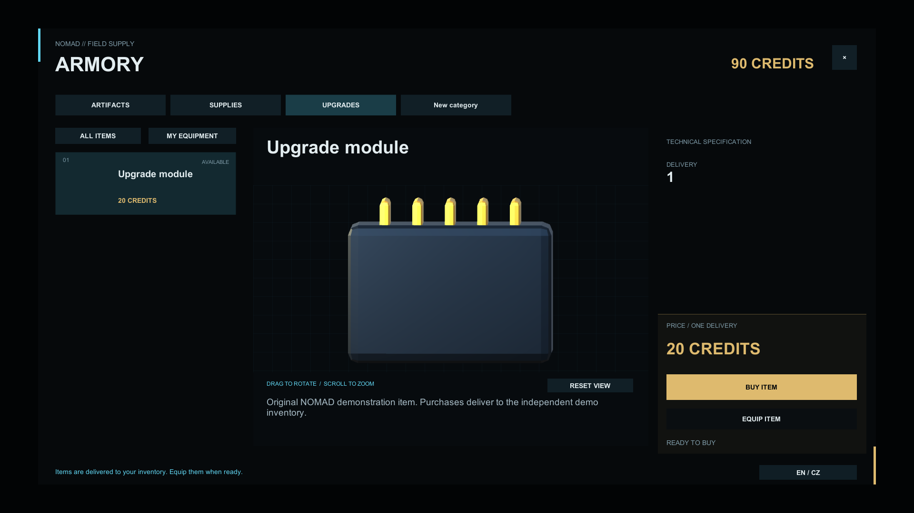

A catalog you control
Categories, prices, stock and purchase limits. Stable IDs connect items to your game.
Bunny Studios presents NOMAD Shop: a modular Unity store with interactive 3D previews and room for your own RPG systems.

A shop-building tool designed to fit the systems of your game.
Categories, prices, stock and purchase limits. Stable IDs connect items to your game.
Drag to rotate, use auto-rotation, zoom and reset the view. Previewing does not run the source prefab’s gameplay scripts.
Adapters for wallets, inventories and purchase rules. Core handles the shop; your game handles persistent saving.
Start with a demo purchase. Then configure your own catalog and connect your game rules.
A place for the publisher’s public contact. A contact address has not been published yet.